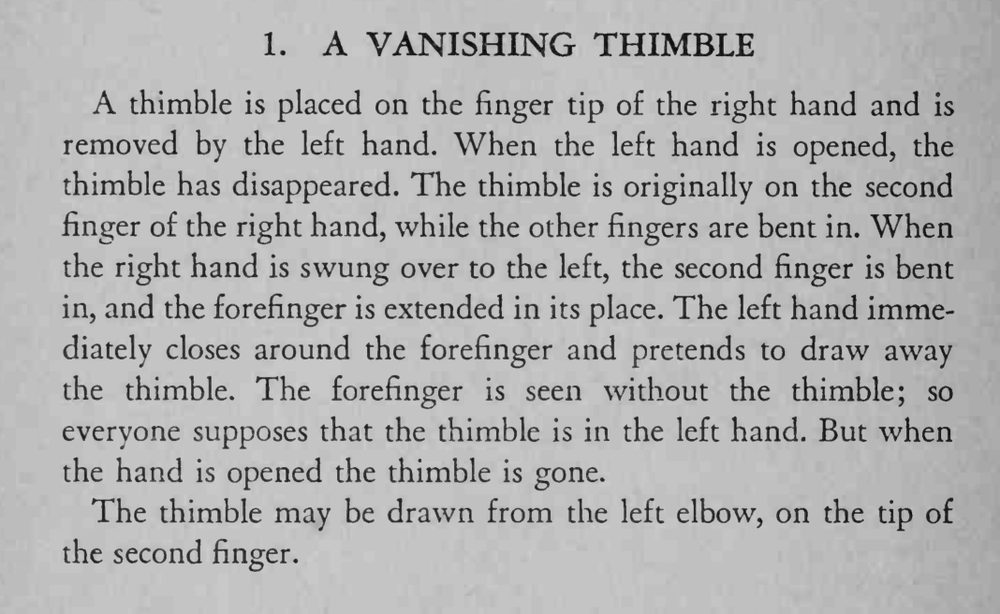

拇指套戴在右手食指上，左手把它取下，摊开左手时拇指套却不见了。
换指要在右手移动的瞬间完成，两手动作要同时，快慢一致。

A thimble is placed on the finger tip of the right hand and is removed by the left hand. When the left hand is opened, the thimble has disappeared. The thimble is originally on the second finger of the right hand, while the other fingers are bent in. When the right hand is swung over to the left, the second finger is bent in, and the forefinger is extended in its place. The left hand immediately closes around the forefinger and pretends to draw away the thimble. The forefinger is seen without the thimble; so everyone supposes that the thimble is in the left hand. But when the hand is opened the thimble is gone. The thimble may be drawn from the left elbow, on the tip of the second finger.